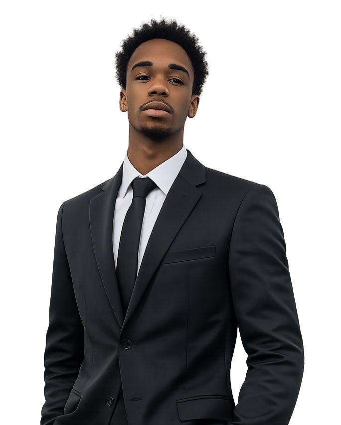
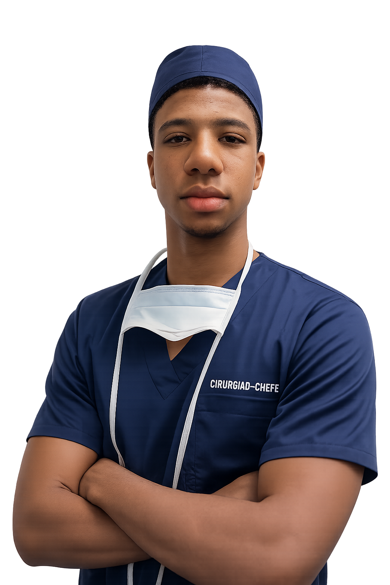
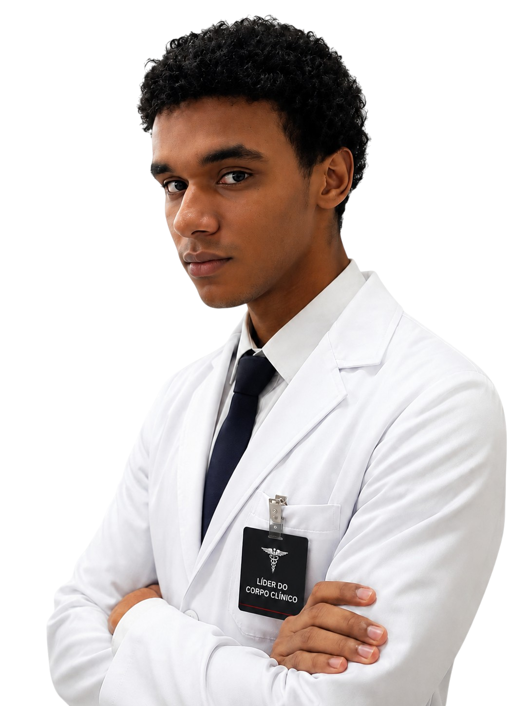
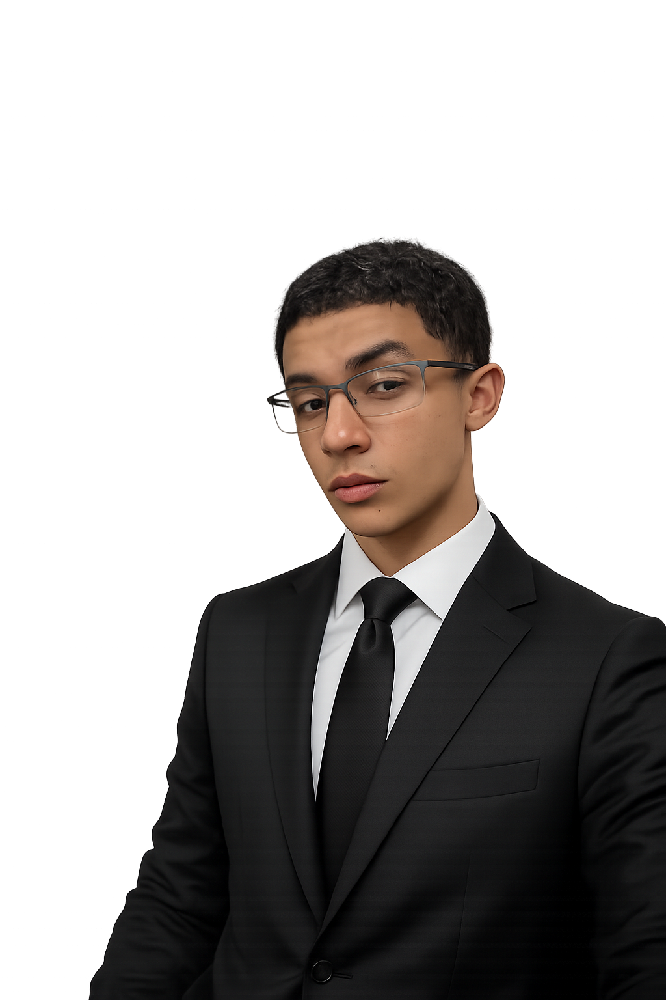
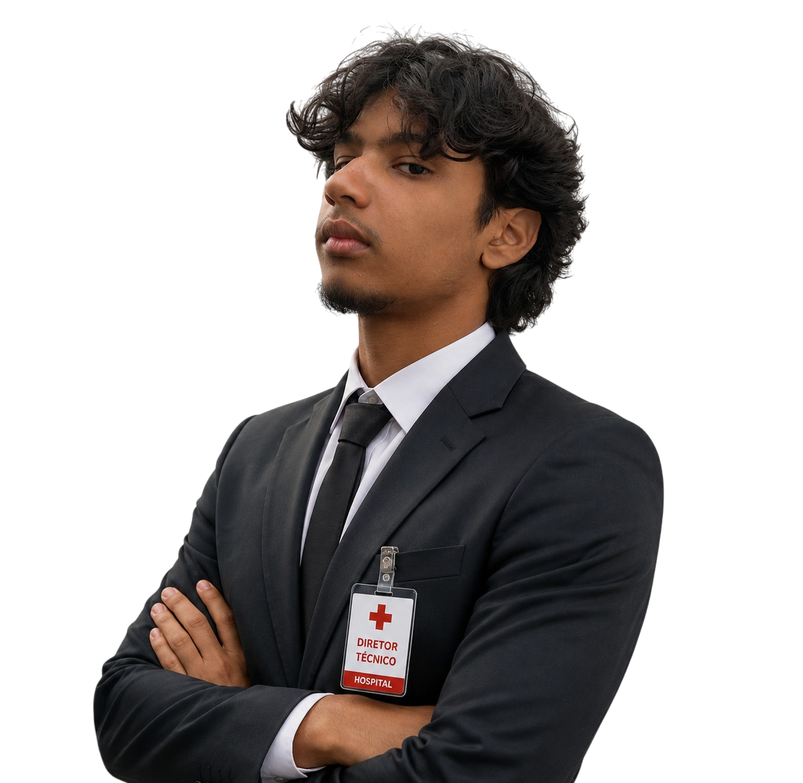

Cria do Morro do Papagaio, se tornou mestre em administração pela Universidade Federal de Minas Gerais e participou da gestão de inúmeras empresas milionárias, tal qual Bet777, Blaze e Fatal Model. Após adquirir vasta experiência na área, se uniu aos fundadores da fundação Florence Nightingale como diretor geral e responsável pela administração financeira.
"Essa é de chefe, bandido."
Vindo de Kibera, Arthur Sales ingressou na Pontíficia Univerdade Católica de Minas Gerais aos 19 anos. Ele se formou em medicina, com pós doutorado metafísico em Imunologia. Graças ao seu parentesco com o vencedor do BBB 24, Davi Brito, ele conheceu os 4 co-fundadores da fundação Florence Nightingale e se tornou o cirurgião chefe do hospital.
"Feliz no simples."
Embora muito doce, Pietro teve de crescer com a ausência de um parente próximo muito importante. Isso, ao contrário do que muitos pensam, o fez desenvolver uma empatia petencostal muito grande; graças a isso, dedicou sua vida à ajudar os outros através da medicina. Formado em medicina e administração, se tornou doutor em urologia. Após fazer sua carreira em diversos hospitais pelo mundo, se juntou com seus amigos de infância para fundar um hospital especializado em tratar a causa da morte precoce de seu pai: as ameaças microscópicas.
"Se eu já perdoei antes, perdoarei de novo."
Seu hiperfoco em desmontar brinquedos na infância o fez se dedicar aos estudos da anatomia humana. Por este motivo, ele estudou arduamente para passar na PUC Minas pelo ENEM; no entanto, acabou falhando. Sua vontade de ajudar os outros, porém, foi maior que a dor do fracasso — tomado por tamanha tenacidade, iniciou um curso gratuito EAD no Youtube com Sandro Curió. Sua qualidade de trabalho não foi limitada por onde estudou, e Daniel conseguiu se tornar um proctologista renomado na área graças ao curso EAD capacitante com as renomadas doutoras Cátia Damasceno e Andressa Dayane. Com seus companheiros de longa data, fundou a Florence Nightingale com objetivo de ajudar o máximo de pessoas possíveis.
"O silêncio vale mais que mil palavras."
Dentre os fundadores, o menor. Assim como Messi, era pequeno, autista e eficiente em seu trabalho. Capacitado pela universidade de Havard, seguiu carreira como programador e mastologista — exclusivamente masculino. Sua carreira brilhante na mastologia masculina o fez ser indicado ao cargo de diretor técnico da iniciativa de seus amigos de infância na Florence Nightingale.
"imagine sísifo feliz."